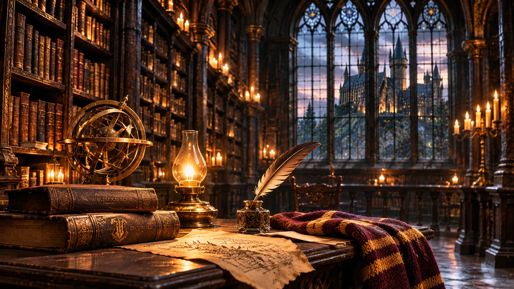

05 / MAGICAL EDUCATION
Изкуството
на магията.
Обучението в Хогуортс продължава седем години и съчетава теория с практическа магия. Учениците приготвят отвари, упражняват заклинания и изучават свойствата на магическите растения. Всеки предмет изисква любопитство, постоянство и готовност да се учиш от грешките си.
Между страниците на старите книги всяко откритие води към следващото. Библиотеката е място за подготовка, проучване и търсене на отговори отвъд наученото в клас.

Основни дисциплини
Сред изучаваните предмети са:
-
Отвари
Приготвяне на магически смеси от внимателно подбрани съставки. Точните количества, редът на добавяне и времето за варене могат напълно да променят резултата.
-
Трансфигурация
Изкуството да променяш формата и свойствата на предмети и живи същества. Уроците изискват прецизни движения, силна концентрация и постепенно овладяване на по-сложни преобразявания.
-
Вълшебство
Заклинания, които придават нови свойства на предметите или им позволяват да извършват необичайни действия. Произношението и движението на пръчката са също толкова важни, колкото намерението.
-
Билкология
Изучаване и отглеждане на магически растения в училищните оранжерии. Учениците опознават техните полезни свойства, приложенията им в отвари и опасностите при неправилна грижа.
-
Защита срещу Черните изкуства
Разпознаване на магически заплахи и усвояване на защитни заклинания. Практическите упражнения развиват бърза реакция, самообладание и умение да защитаваш себе си и другите.
Седем години в Хогуортс
-
I–II година
Първите основи
Учениците опознават основните магически дисциплини и усвояват първите си заклинания. Практическите занимания вървят заедно с домашни работи и подготовка в библиотеката.
-
III–V година
Нови посоки
Към основните предмети се добавят избираеми дисциплини. Изпитите в края на петата година проверяват натрупаните знания и влияят върху продължаването в по-напредналите курсове.
-
VI–VII година
Задълбочаване
Обучението се съсредоточава върху избрани предмети на по-високо ниво. Финалните изпити в седмата година бележат края на училищния път и подготовката за бъдеща професия.